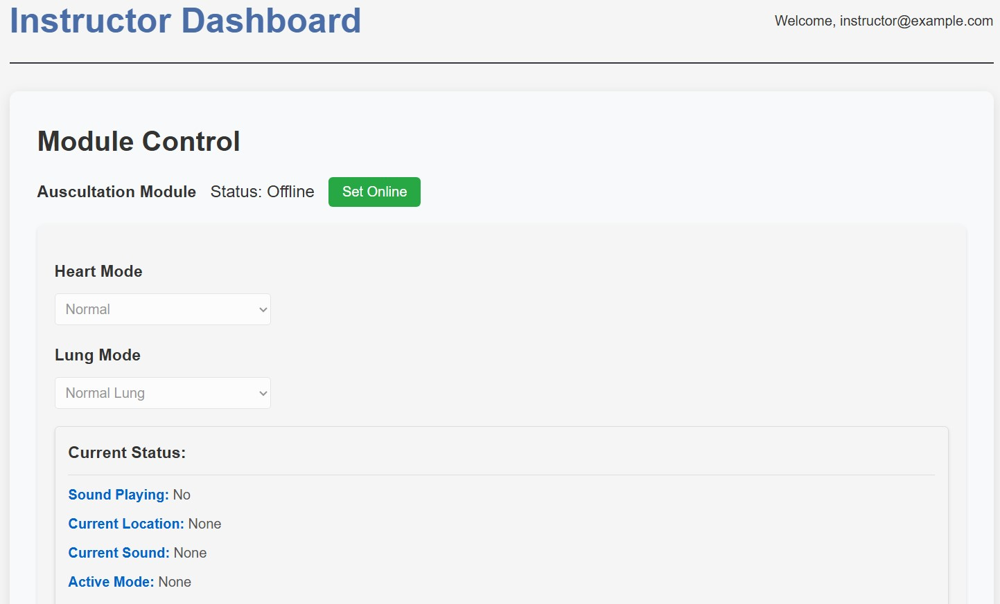

CAST Medical Interface
A patient simulator that lets nursing students practice auscultation on a manikin, with real heart and lung sounds played through a custom RFID stethoscope. Built for Queen's University School of Nursing.
Product overview
Nursing students need to learn auscultation, using a stethoscope to listen to heart and lung sounds. Practicing on real patients is limited and risky. Existing simulators are either too expensive (commercial patient simulators with auscultation start around $50K) or too simple, just audio files on a laptop.
Queen's School of Nursing needed something in between: realistic enough to teach proper technique, affordable enough to deploy in labs, and reliable enough for daily student use. We built CAST, Clinical Auscultation Simulation Training. The full system had two modules: auscultation (listening with a stethoscope) and palpation (physical examination by touch). I owned everything software and handled all hardware-software integration for the auscultation side.
The challenge was not making one component work. It was making the entire experience feel invisible to the learner.
Physical interaction
The student picks up the stethoscope and places it on the manikin's chest or back, exactly as they would with a patient. Inside the chest piece, an MFRC522 RFID reader identifies which anatomical position it is touching, and the matching heart or lung sound plays through earphones plugged into the Raspberry Pi. It looks and feels like using a real stethoscope, but the sounds come from the manikin's active audio scenario rather than actual vibrations.
The interaction only works if it is fast. Audio switches in under 260ms when the stethoscope moves between positions, so listening feels continuous rather than like triggering sound clips.

- 1 Earphones, audio out from the Pi. The student hears the scenario here.
- 2 Printed enclosure housing the Raspberry Pi 4, the system's controller.
- 3 MFRC522 reader in the printed chest-piece housing. This is the part that touches the manikin.
- 4 Cable harness carrying the SPI connection between reader and Pi.
Exploded system view
Reading the system top down, from the surface the student touches to the audio they hear:
-
LAYER 01
BASE: DONATED CPR MANIKIN
Manikin surface
An old CPR manikin donated from Queen's Clinical Simulation Center. The student interacts with anatomy, not electronics.
MODULAR SKIN + BASE UNIT -
LAYER 02
12 TAGS
RFID tags
Twelve passive tags embedded at anatomically correct auscultation points. Each tag carries a unique ID.
H1-H6 CARDIAC · L1-L6 PULMONARY -
LAYER 03
MFRC522 → SPI → RASPBERRY PI 4
Reader + Pi
The MFRC522 in the stethoscope chest piece reads whichever tag it touches and reports it to the Raspberry Pi 4 over SPI.
-
LAYER 04
TAG ID → POSITION → SOUND FILE
Scenario logic
A lookup table maps tag ID to anatomical position, then position to the correct sound file for whichever scenario the instructor has set.
28 AUDIO SCENARIOS -
LAYER 05
SWITCH < 260 MS
Audio + interface
Pygame's mixer plays the sound through the earphones while Flask and Socket.IO push live state to the instructor and student dashboards.
FLASK + SOCKET.IO LIVE FEED
Prototype evolution
The design brief called for a manikin that could host more than one kind of training. So the platform is modular: a skin layer lifts off, a training module drops into the base unit, and the detachable head houses the Raspberry Pi, which exchanges data with the web interface. One module carries an array of force sensors for CPR and patient check-up practice, the palpation side of the project. The other carries the RFID tags for auscultation, the side documented here.

The base itself was not bought. It was an old CPR manikin donated by Queen's Clinical Simulation Center, which is also why the cost sheet in section 09 counts its replacement value rather than a purchase. The stethoscope went through its own iterations: a housing for the chest piece that holds the MFRC522 flush against the reading surface, with the cable harness strain-relieved back to the Pi enclosure.
Hardware architecture
The electronics are deliberately minimal. One single-board computer, one reader, twelve passive tags, and a pair of earphones. Everything else is software.
Raspberry Pi 4
Central controller running the Flask server and the audio system
MFRC522 RFID
Reader module in the stethoscope chest piece, communicating via SPI
Passive RFID tags
12 tags embedded in the manikin, one per auscultation point, no wiring or power at the tag
Wired earphones
Plug directly into the Pi, so the student hears audio localized to wherever the stethoscope sits
Keeping the tags passive matters: the manikin body contains no powered electronics on the auscultation side, so there is nothing inside it to charge, service, or break during daily student handling.
Software logic
Heart and lung sounds need to loop cleanly and switch the instant the stethoscope moves. I used Pygame's mixer with pre-loaded audio channels, which is how the system hits switching times under 260ms. The Flask server, with Socket.IO for real-time updates, keeps both dashboards in sync with what the hardware is doing.
STETHOSCOPE CONTACT → MFRC522 READ ....... tag UID over SPI → POSITION LOOKUP .... UID mapped to H1-H6 / L1-L6 → SCENARIO MAP ....... position + active scenario → sound file → CHANNEL SWITCH ..... pygame mixer, pre-loaded, < 260 ms → AUDIO OUT .......... earphones via the Pi → SOCKET.IO EVENT .... instructor + student dashboards update
The software maintains a lookup table connecting tag IDs to positions, and positions to the appropriate sound file based on the active scenario. Changing the scenario never touches the hardware; it only changes which files the positions resolve to.
Audio-scenario system
Twelve auscultation points, six cardiac and six pulmonary, cover the standard listening positions. On top of that sit 28 audio scenarios, everything from normal heartbeat and normal breath sounds to various murmurs and respiratory conditions, all real clinical audio recordings.
| Group | Tags | Listening points |
|---|---|---|
| Cardiac | H1-H6 | Aortic, pulmonic, tricuspid, mitral, and additional cardiac positions |
| Pulmonary | L1-L6 | Anterior and posterior listening points for both lungs |
Any of the 28 scenarios can be active at once, and every tagged position resolves to the correct sound for that scenario. A murmur scenario does not just change one spot; it changes what the whole chest sounds like, position by position.
The interface: where it all comes together
Everything upstream of this point only matters if it is trustworthy to look at. The RFID read, the position lookup, the 260ms audio switch, none of it means anything if the instructor cannot see what the hardware is doing right now, and if the student cannot tell whether the module is even live. Flask and Socket.IO are the layer that turns hardware state, instructor input, and audio playback into one shared, real-time picture for two different people looking at two different screens. This is the part that glues the rest of the system together.
Instructor dashboard: control
The instructor's job is to set up a scenario, then trust that it is running. The dashboard reflects that: a single toggle brings the auscultation module online, two dropdowns choose which of the 28 scenarios plays at the cardiac and pulmonary positions, and a live status block reports exactly what the hardware is doing, sound playing or not, current tag location, current sound file, active mode, all pushed over Socket.IO the instant the state changes on the Pi, not on a page refresh.

- 1 Set Online. Puts the auscultation module live; before this, the hardware is powered but inactive.
- 2 Heart Mode. Chooses the scenario playing at the six cardiac positions.
- 3 Lung Mode. Same choice for the six pulmonary positions.
- 4 Live status. Sound Playing, Current Location, Current Sound, Active Mode, all Socket.IO-pushed.
Student dashboard: confidence
Students do not need control, they need to trust the module is working. Their view is deliberately narrower: a Live Simulation tab confirming the module is active ("Auscultation Module is Active, Ready for Examination," timestamped), a Quiz Mode where the program picks a scenario at random or the student chooses one to practice against, a Feedback tab, and a Session History log. Same underlying state as the instructor's dashboard, different questions answered.

Two dashboards reading the same Socket.IO state was a deliberate split, not two half-built features. An instructor who needs to change a scenario mid-session and a student who just needs to know the module is live are asking different questions of the same system, so they get different answers instead of one screen trying to serve both.
Constraints: the ~$250 line
The whole project lived under one number. Commercial patient simulators with auscultation capabilities start around $50K. CAST had to land near $250, roughly 200× cheaper, without feeling like a toy.
| Item | Note | Cost |
|---|---|---|
| CPR manikin | Donated by Queen's Clinical Simulation Center; counted at replacement value | ~$180 |
| Raspberry Pi + MFRC522 | The cheapest Raspberry Pi plus the RFID reader | ~$70 |
| Total | vs. ~$50K+ commercial entry point | ~$250 |
The constraint also shaped conversations, not just parts lists. One instructor asked if we could make skin that heals itself after needle injections: the student pokes it, and it closes back up. I had to explain that while self-healing materials exist, they are expensive, slow, and not something we could integrate into a $250 system. Managing expectations without crushing enthusiasm is its own skill.
Working with non-engineers meant constantly translating between what they want and what is physically possible. "I want self-healing skin" usually means "I need something durable for repeated use." Digging for the underlying need was as much a part of the job as the code.
Testing
The number that mattered most was switching latency. With pre-loaded channels, audio switches between positions in under 260ms, fast enough that moving the stethoscope feels like listening to one patient rather than queuing clips.
Sessions with the nursing instructors confirmed it. They liked the speed and the smooth transitions between sounds, and they particularly appreciated having real clinical audio recordings rather than synthesized approximations.
Deployment
CAST is in use at Queen's School of Nursing. That changed what "done" meant. This system will be maintained by people who were not on the team, possibly years from now, so I wrote the documentation assuming the reader knows nothing: architecture diagrams, wiring schematics, troubleshooting guides, the works.
I'm proud of the code, but I'm more proud of the documentation. If the next person can pick it up without calling me, I did my job right.
What changed after real use
The instructors made one correction that stuck. We had been calling the sounds "conditions." They pointed out that a normal heartbeat or normal breath sounds are not conditions, they are reference baselines. Fair point. They are "audio scenarios" now, in the interface and in this write-up.
- Users know what they need, not what they want. The self-healing-skin request was really a durability requirement. Dig for the underlying need.
- Document like you're leaving tomorrow. Because eventually, you are. Good documentation is a gift to future maintainers.
- Integration is the project. Getting the RFID, audio, web server, and UI to work together smoothly took longer than building any single piece.